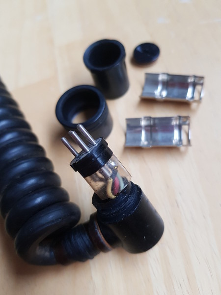
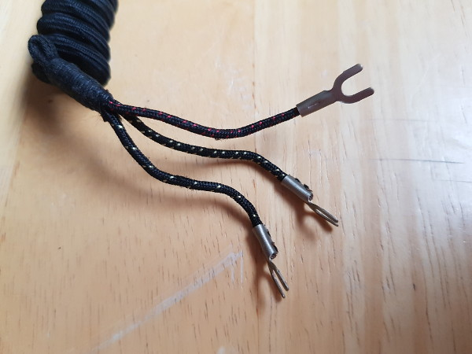

Telephone Handset Connector Replacements
I have some old telephone handsets, where at least one of them seems to date back to the 1930's based on some patents ("British Patents 319837.328926.433234") that I found. All of them had strange connectors incompatible with modern equipment:


But since the speaker and microphone technology has remained mostly the same for over a century, I decided to simply replace the connectors with modern mini jack plugs:
This makes it possible to connect them easily to a modern PC and even use them for voice chat.
On the first one the original cable disintegrated when I tried to re-use it, so I replaced the entire cable. This one also has a switch that I wired to pin 8 and 7 on a DE9 connector, so that I can use the CTS/RTS trick to read it through a standard PC serial port.
On the second one I was able to re-use the original cable. This one also has a switch, but I did not wire that up to anything.
On the third one I had issues with a broken wire in the original cable, so that had to be replaced as well. Here I ended up simply re-using the entire cable with connectors from a broken PC headset.